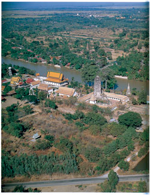

วัดพุทไธศวรรย์ ตั้งอยู่ในเขตตำบลสำเภาล่ม อำเภอพระนครศรีอยุธยา จังหวัดพระนครศรีอยุธยา นอกเกาะเมืองพระนครศรีอยุธยาทางด้านทิศใต้ ปัจจุบันมีอาณาเขตเนื้อที่ ๔๖ ไร่ ๒ งาน ๔๖ ตารางวา

ศักราช ๗๑๕ ปีมะเส็ง เบญจศก (พ.ศ. ๑๘๙๖) วันพฤหัสบดี เดือน ๔ ขึ้น ๑ ค่ำ เพลา ๒ นาฬิกา ๕ บาท ทรงพระกรุณาตรัสว่า ที่พระตำหนักเวียงเหล็กนั้นให้สถาปนาพระวิหารและพระมหาธาตุเป็นอารามแล้ว ให้นามชื่อ วัดพุทไธศวรรย์
พระตำหนักเวียงเหล็ก ที่กล่าวไว้ในพงศาวดารนี้ คือ บริเวณที่ประทับเดิมของสมเด็จพระรามาธิบดีที่ ๑ (พระเจ้าอู่ทอง) ก่อนที่จะยกข้ามแม่น้ำไปสร้างพระราชวังที่ ตำบลหนองโสน หรือที่เรียกว่า “บึงพระราม” ในปัจจุบันและสถาปนากรุงศรีอยุธยาขึ้นเป็นราชธานีใน พ.ศ. ๑๘๙๓
ส่วนเรื่องราวเกี่ยวกับประวัติความเป็นมา ของสมเด็จพระเจ้าอู่ทอง ผู้สถาปนากรุงศรีอยุธยานั้นในปัจจุบันยังคงเป็นประเด็นสำคัญทางด้าน ประวัติศาสตร์ ซึ่งยังหาข้อสรุปที่ยุติยังไม่ได้ นักโบราณคดีและนักประวัติศาสตร์ได้ศึกษาเรื่องราวความเป็นมาของสมเด็จ พระเจ้าอู่ทอง และสรุปได้ ๓ ทฤษฎี คือ
ทฤษฎีที่ ๑ เชื่อกันว่าพระเจ้าอู่ทอง เป็นชามาดา (ลูกเขย) เจ้าเมืองสุพรรณบุรี เป็นเชื่อสายของเข้าชายไชยศิริ แห่งเมืองเชียงราย ซึ่งอพยพถอยร่นกันมาจากเมืองเหนือ ผ่านดินแดนต่างๆ จนกระทั่งมาตั้งถิ่นฐานทำกินที่เมืองอู่ทอง จังหวัดสุพรรณบุรี ต่อมาได้หนีโรคห่า มาตั้งนครหลวงใหม่ที่เมืองอโยธยาในปี พ.ศ. ๑๘๙๐ นักปราชญ์รุ่นต่อมาจึงเรียกกษัตริย์ที่สืบเชื้อสายต่อกันมาว่า วงศ์เชียงราย
ทฤษฎีที่ ๒ เป็นเจ้าเมืองเพชรบุรี ซึ่งสืบเชื้อสายมาจากชาวจีนโพ้นทะเลที่อพยพเข้ามายังเมืองปัตตานี แล้วอพยพเดินทัพเข้ามาทางเมืองนครศรีธรรมราช และเพชรบุรีจนกระทั้งตั้งพระนครศรีอยุธยาเป็นราชธานี ทฤษฎีนี้ไม่ได้ให้กำเนิดชาติวงศ์ไว้ชัด แต่ก็ได้สรุปเป็นแนวทางว่าพระเข้ากรุงจีน ได้เมตตาอนุญาตให้เข้าไปค้าขายในประเทศจีนได้เป็นกรณีพิเศษ
ทฤษฎีที่ ๓ เป็นเจ้าชายเมืองลพบุรี (อาจเชื่อสายขอม?) เจ้าของทฤษฎีนี้ได้แก่ สมเด็จกรมพระยาดำรงราชานุภาพ ซึ่งทรงพระราชทานกระแสพระราชดำริแก่พระยาอนุมานราชธน อธิบดีกรมศิลปากร แต่ไม่ทันได้ให้เหตุผลชัดเจนท่านได้ทิวงคตเสียก่อน พระยาโบราณราชธานินทร์ จึงกำหนดอายุของเมืองอยุธยาว่าในสมัยต้น เป็นทราวดี และนายมานิต วัลลิโภดม อดีตภัณฑารักษ์พิเศษ กรมศิลปากร ได้ศึกษา ขยายความ ปรากฎรายละเอียดเพิ่มเติมในบทความเรื่องละโล้ – อโยธยา – ตามพรลิงค์ ว่าเป็นกษัตริย์เมืองละโว้ – อโยธยา
ในจดหมายเหตุโหรได้กล่าวถึง เหตุการณ์ครั้งที่พระเจ้าอู่ทอง ทรงอพยบพาไพร่พลหนีโรคภัยมาจากเมืองอู่ทองนั้น ในตอนแรกได้มาตั้งที่ตำบลเวียงหลัก เมื่อปีกุน จุลศักราช ๗๐๙ (พ.ศ. ๑๘๙๐) และได้พักไพร่พลอยู่ ณ ที่นี้ถึง ๓ ปี จนกระทั้งเห็นว่าไฟร่พลของพระองค์พ้นจากความอิดโรย มีความเข้มแข็งขึ้น จึงยกไพร่พลข้ามแม่น้ำมาสร้างพระนครศรีอยุธยา อยู่ในบริเวณปัจจุบันและทำพระราชพิธีราชาภิเษกสถาปนาพระนคร เมื่อปีเถาะ โทศก จุลศักราช ๗๑๒ (พ.ศ. ๑๘๙๓) (กรมศิลปากร, พระราชพงศาวดารกรุงศรีอยุธยา ฉบับ พระราชหัตถเลขา เล่ม ๑, ๒๕๐๖, หน้า ๓๔๒)
ครั้นเมื่อพรองค์ครองราชย์สมบัติได้ ๓ ปี ใน พ.ศ. ๑๘๙๖ (จ.ศ. ๗๐๕) จึงได้สถาปนาพระอารามขึ้นเพื่อเป็นอนุสรณ์ในการสร้างชาติของพระองค์ ด้วยความสำคัญของพี้นที่ดังกล่าวข้างต้น
การศึกษาของ ประยูร อุลุชาฎะ (น. ณ ปากน้ำ) ได้ระบุว่า บริเวณที่ตังพระตำหนักเวียงเหล็กนั้น ตั้งอยู่ภายในเขตของเมืองปะทาคูจาม (ปะทา แปลว่า ป้อม และจาม หมายถึง ขาวเวียตนามที่นับถือศาสนาอิสลาม) ซึ่งตั้งอยู่บริเวณคลองปะจาม ซึ่งอยู่ถัดจากวัดพุทไธศวรรย์ ไปทางทิศตะวันออกไม่ไกลนัก (น. ณ ปากน้ำ, ๒๕๐๖, หน้า ๔๕) อันปรากฎในแผนที่ของชาวต่างชาติ ว่าเป็นบริเวณที่ตั้งถิ่นฐาน ของชาวญวนในสมัยอยุธยา (อัมพร สายสุวรรณ, แผนผังกรุงศรีอยุธยาไม่มีเลขหน้า) ในสมัยอยุธยา บริเวณปากคลองคูจามนี้ เป็นตลาดน้ำที่ใหญ่ที่สุด ๑ ใน ๔ ตลาดของกรุงศรีอยุธยา ซึ่งแสดงให้เห็นว่าเป็นบริเวณที่มีชุมชนขนาดใหญ่และมีความสำคัญอาศัยอยู่ บริเวณนี้ (กรมศิลปากร, ๒๕๑๑, หน้า ๑๗๐)
ประยูร อุลุชาฎะ ได้สันนิษฐานว่าคลองคูจามนี้มีความสำคัญในฐานะที่เป็นคูเมือง ของเมืองปะทาคูจาม ตัวเมืองอาจเป็นที่ดินซึ่งเรียกว่า แหลมบางกะจะในเขตตำบลสำเภาล่ม อันโอบล้อมด้วยแม่น้ำเจ้าพระยาทางทิศเหนือ และแม่น้ำเจ้าพระยา ซึ่งไหลโอบจากวัดพนัญเชิง ลงใต้ทางทิศตะวันออก ส่วนคลองปะจามนั้นอยู่ทางทิศตะวันตก หรือตัวเมืองปะทาคูจามอาจจะเป็นบริเวณ ตำบลเวียงเหล็ก ที่วัดพุทไธศวรรย์ โดยมีคลองปะจามเป็นคูเมืองทางทิศตะวันออก คลองตะเคียนเป็นคูเมืองทางทิศตะวันตก มีแม่น้ำเจ้าพระยาโอบทั้งทางทิศเหนือและใต้
และจากข้อความที่ระบุเหตุการณ์ ในสมัยอยุธยาตอนต้นเกี่ยวกับพื้นที่บริเวณปะทาคูจาม ในพระราชพงศาวดารกรงศรีอยุธยา ทำให้พอจะสันนิษฐานได้ว่าในสมัยอยุธยาตอนต้นนั้น ปะทาคูจามมีลักษณะเป็นวังหน้า ดังข้อความนี้
** “ศักราช ๗๔๙ ปีเถาะ นพศก สถาปนาวัดภูเขาทอง เพลาเย็น เสด็จไป ณ พระที่นั่งมังคลาภิเษก ท้าวมณเฑียรซึ่งถึงอนิจกรรมแต่ก่อนหน้านั้นมานั่งขวางทางเสด็จอยู่แล้วแลหาย ไป สมเด็จพระราเมศวรบรมพิตรก็เสด็จสวรรคต อยู่ในราชสมบัติหกปี จึงพระยาราม ผู้เป็นพระราชบุตร ได้ครองราชย์สมบัติได้ห้าปี สมเด็กพระยารามเจ้ามีความพิโรธแก่เจ้าพระยามหาเสนาบดี ดำรัสสั่งให้กุมเอาตัวไป เจ้าพระยามหาเสนาบดี หนีรอดไป อยู่ฟากปะทาคูจามจึงให้เสด็จสมเด็จพระอินทราชา ณ เมืองสุพรรณบุรีเสด็จเข้ามาถึง จึงเจ้าพระยามหาเสนาบดี ยกเข้าปล้นเอาพระนครศรีอยุธยาได้ จึงเชิญสมเด็จพระอินทราชาขึ้นครองราชย์ สมบัติในศักราช ๗๖๓ ปีมเสง ตรีศก ให้สมเด็จพระยารามไปกิน เมืองปะทาคูจาม”
ในรัชกาลสมเด็จพระมหาจักรพรรดิ วัดพุทไธศวรรย์ ได้ถูกใช้เป็นสถานที่ตั้งทัพของพม่า ในคราวที่ยกทัพมาล้อมกรุงฯ เพื่อทำการรบกับกรุงศรีอยุธยา เนื่องจากวัดพุทไธศวรรย์ เป็นวัดที่ตั้งอยู่นอกกำแพงเมืองกรุงศรีอยุธยา กล่าวคือ เมื่อครั้งที่พระเจ้าบุเรงนอง แห่งกรุงหงสาวดี ทรงส่งพระราชสาส์น มาขอม้าและช้างเผือก จากสมเด็จพระมหาจักรพรรดิ แต่ถูกปฏิเสธ พระเจ้าบุเรงนองจึงยกทัพเข้ามาและกวาดต้อนเอากำลังทางหัวเมืองของไทยมาสมทบ ด้วย เมื่อยกทัพมาถึงกรุงศรีอยุธยา ดังข้อความว่า
“ในวันพุธ เดือนยี่ แรม ๑๐ ค่ำ ศักราช ๙๑๑ ปีระกา เอกศก (พ.ศ. ๒๐๘๒) จึงโปรดให้พระมหาอุปราช เป็นกองหน้าตั้งค่าย ณ ตำบลเพนียด ทัพพระเจ้าแปรเป็นปีกซ้าย ตั้งค่าย ณ ตำบลทุ่งโพธาราม เป็นกองหน้าตั้งค่าย ณ ตำบลเพนียด ทัพพระเจ้าแปรเป็นปีกซ้าย ตั้งค่าย ณ ตำบลทุ่งโพธาราม ทัพพระเจ้าอังวะเป็นปีกขวา ตั้งค่าย ณ ตำบลพุทไธศวรรย์ ทัพพระยาตองอู ทัพพระยาจิตตอง ทัพพระยาละเคิ่ง เกียกกาย ตั้งค่ายวัดท่าการ้องลงไปถึงวัดไชยวัฒนาราม ทัพพระยาสิน, ทัพพระยาสะเรียง กองหน้าทัพหลวงตั้งค่าย ณ ตำบลลุ่มพลี ทัพหลวงตั้งค่าย ณ ตำบลวัดโพธิ์เผือก ทุ่งขนอนปากคู ทัพสมเด็จพระมหาธรรมราชาธิราช ตั้งค่าย ณ ตำบลมะขามหย่อง (หลังคำยหลวง)” ในรัชกาลสมเด็จพระสรรเพชญ์ที่ ๘ (ขุนหลวงสรศักดิ์ หรือ สมเด็จพระเจ้าเสือ) ราว พ.ศ. ๒๒๔๓ สมเด็จกรมหลวงโยธาเทพ และสมเด็จกรมหลวงโยธาทิพ สมเด็จพรอัครมเหสีฝ่ายซ้าย และฝ่ายขวา ในสมเด็จพระเพทราชา ได้ทูลลาสมเด็จพระเจ้าเสือ ออกจากพระราชวัง พร้อมด้วยเจ้าตรัสน้อยราชบุตร (พระราชโอรสของสมเด็จพระเพทราชา) ไปตั้งนิวาสสถานอยู่ใกล้วัดพุทไธศวรรย์ ครั้งเมื่อปีมะโรง โทศกเจ้าตรัสน้อยพระชนม์ครบ ๑๓ พรรษา เจ้ากรมหลวงโยธาเทพพระราชมารดานั้น ก็ได้กระทำมหามงคลพิธีโสกันต์พระราชบุตร ครั้นโสกันต์แล้วจึงให้ไปทรงผนวชเป็นสามเณร อยู่ในสำนักพระพุทธโฆษาจารย์ราชาคณะ เพื่อทรงเรียน พระปริยัติไตรปิฎกธรรม และคัมภีร์เลขยันต์มนตร์คาถาสรรพวิทยาคุณต่างๆ จนกระทั่งพระชนม์ได้ ๑๘ พรรษา จึงลาผนวช ออกเที่ยวเรียนศิลปศาสตร์ แขนงต่างๆ จนพระชนม์ครบอุปสมบทก็ทรงผนวชเป็นพระภิกษุ (กรมศิลปากร, ๒๕๐, หน้า ๑๗๔) ในช่วงสมัยอยุธยาตอนปลาย ได้มีเหตุการณ์ในพระราชพงศาวดารระบุว่า บริเวณวัดพุทไธศวรรย์นั้น ได้ใช้เป็นสถานที่ประกอบการเมรุที่สำคัญถึง ๒ ครั้ง กล่าวคือ ในรัชกาลสมัยพระเจ้าอยู่หัวท้ายสระ ปี พ.ศ. ๒๒๕๘ กรมหลวงโยธาทิพทิวงคต ณ ตำหนักริมวัดพุทไธศวรรย์ จึงได้จัดงานพระศพตามพระราชประเพณี ดังข้อความว่า >“ณ ปีมะแม สัปตศกนั้น…ในปีนั้น เจ้าพระอัยยิกา กรมหลวงโยธาทิพทิวงคต ณ พระตำหนัก วัดพุทไธศวรรย์นั้น สมเด็จพระเจ้าแผ่นดินให้ช่างไม้กระทำการเมรุ ขื่อขาว ๕ วา ๒ ศอก โดยสูง ๒๐ วา ๒ ศอก และพระเมรุทองกลาง และการพรเมรุทั้งปวงนั้น ๖ เดือนเศษจึงแล้วเชิญพระโกศทองขึ้นราชรถ พร้อมเครื่องอลกตแห่แทนเป็นอันมากน้ำมาสู่พระเมรุทอง และการที่บูชาให้ทานทั้งปวง ตามอย่างราชประเพณีมาแต่ก่อนสมโภช ๗ วัน การพระศพนั้นสำเร็จบริบูรณ์” ต่อมา ในรัชกาลสมเด็จพระเจ้าอยู่หัวบรมโกศ สมเด็จกรมหลวงโยธาเทพ ได้ทิวงคตลง ณ ตำหนักริมวัดพุทไธศวรรย์ พระองค์ได้ทรงโปรดให้ทำการเมรุ ณ วัดพุทไธศวรรย์ ดังข้อความว่า วัดพุทไธศวรรย์น่าจะมีความสำคัญมากขึ้นใน พ.ศ. ๒๒๙๓ เมื่อสมเด็จพระเจ้าอยู่หัวบรมโกศ ได้ทรงมีพระบรมราชโองการให้นำคณะฑูตชาวสิงหลไปนมัสการและประกอบศาสนกิจที่ วัดพุทไธศวรรย์ โดยการเข้ามาของคณะฑูตขางสิงหลในครั้งนี้ปรากฎ ข้อความในราชพงศาวดารกรุงศรีอยุธยาว่า “ลุศักราช ๑๑๑๕ ปีระกา เบญจศก ฝ่ายพระเจ้ากิตติศิริราชสีห์ ได้เสวยสมบัติในเมืองสังขัณฑนคร เป็นอิสราธิบดีในลังกาทวีป ครั้งนั้น พระพุทธศาสนาในเกาะลังกาหาพระภิษุสงฆ์ไม่ได้ จึงแต่งให้ศิริวัฒนอำมาตย์เป็นราชฑูต กับอุปฑูต ตรีฑูตจำทูลพระราชสาส์นคุมเครื่องมงคลราชบรรณาการ มีพระบรมสารีริกธาตุเป็นอาทิ มากับกำปั่นโอลันขาพานิชวิลันดาเข้ามาจำเริญทางพระราชไมตรี ณ กรุงเทพมหานคร จะขอพระภิกษุสงฆ์ออกไปให้อุปสมบทบวช กุลบุตรสืบพระพุทธศาสนาในลังกาทวีป ทรงพระกรุณาดำรัสสั่งให้จัดแจงรับฑูตานุฑูตลังกาตามธรรมเนียม…แล้วโปรดให้ อาราธนา พระอุบาลี พระอริยมุนี พระราชาคณะสองพระองค์กับพระสงฆ์อันดับสิบสองรูป ออกไปตั้งพระพุทธศาสนาบวชกุลบุตรไว้ในลังกาทวีป…” ในหนังสือ “เรื่องประดิษฐานพระสงฆ์สยามวงศ์ในลังกาทวีป” ของสมเด็จพรมพระยาดำรงราชานุภาพได้ทรางกล่าวถึงเหตุการณ์เมื่อครั้งที่คณะ ราชฑูตลังกา ได้เข้ามาในรัชกาลสมเด็จพระเจ้าบรมโกศนี้โดยได้ระบุว่าในจดหมายเหตุราชฑู ตลังกาซึ่งเข้ามาในช่วงนั้น ได้มีการเขียนบันทึกพรรณนาถึงสภาพของวัดพุทไธศวรรย์ไว้อย่างละเอียด ซึ่งถือได้ว่าเป็นข้อมูลสำคัญส่วนหนึ่ง ซึ่งแสดงให้เห็นถึงสิ่งก่อสร้างภายในวัดพุทไธศวรรย์ ในช่วงอยุธยาตอนปลาย (สมเด็จกรมพระยาดำรงราชนุภาพ, ๒๕๐๓, หน้า ๑๒๔) แต่พระองค์ทรงตัดตอน ไม่ได้บรรยายไว้ในหนังสือนั้นเอกสารที่ระบุรายละเอียดของวัดพุทไธศวรรย์นี้ ได้รับการแปลและตีพิมพ์ในวารสาร Journal of the Royal Asiatic Society, Ceylon Branch, Vol. XVIII, No.54 (1903), pp, 22-26. โดยอ้างอิงจาก P.E. Pieris, “An Account of King kirti Sri’ Embassy to Siam in 1672 Saka (1750 A.D.) มีข้อความดังนี้ “เจ็ดวัดต่อมาในวันศุกร์ เป็นวันเพ็ญ ข้าราชการสองคนมาพบเราและบอกว่า มีพระบรมราชโองการให้เราไปที่วัดสองวัดในวันนี้ เราจึงเดินทางโดยทางเรือไปที่วัด เรียกว่าวัดพุทไธศวรรย์ (Puthai Suwan) ซึ่งจะอธิบายดังต่อไปนี้ ทางด้านขวามือของแม่น้ำใหญ่มีทุ่งกว้างที่สิ้นสุดลงที่ฝั่งแม่น้ำ ณ ที่นี้อาคารหลังคาสองชั้นสร้างเป็นรูปจัตุรัส มีประตูอยู่ สี่ประตู ทั้งสี่ด้าน ผนังทั้งสี่ ประดิษฐานพระพุทธรูปปิดทองสองร้อยองค์ ภายในประตูทางด้านทิศตะวันออกมีรอยพระพุทธบาทจำลอง รูปมงคลบนรอยพระพุทธบาทนั้น ปิดทองตรงกลางของจตุรัสมี พระปรางค์ (dagava) ใหญ่ปิดทอง มีสี่ประตู เมื่อเข้าประตู ด้านทิศตะวันออกแล้วจะมีบันไดศิลาปิดทอง พระมหาธาตุนั้นประดิษฐานอยู่ภายในท้องคูหาของพระปรางค์ ห้องนี้สร้างขึ้นเพื่อให้เดินประทักษิณได้โดยรอบพระมหาธาตุ โดยไม่ต้องเข้าไปใกล้พระธาตุ ภายในพระปรางค์ยังมีรอยพระบาทจำลองปิดทองอีกด้วยเคียงข้างประตูทิศตะวันออก มีพญานาคห้าเศียรเลื้อยลงสู่พื้นดินทางด้านทิศเหนือของพระปรางค์มีวิหารหลัง สองชั้น มีชุกชีอยู่ตรงกลางบนฐานนี้มีพระพุทธรูปประทับปิดทอง สูง ๑๒ ศอก ทางด้านทิศตะวันออกหันหน้าไปทางพระปรางค์ มีวหารหลังคาห้าชั้น ผูกเพดานด้วยผ้าและประดับด้วยจิตรกรรมปิดทองเสากลางห้องปิดด้วยแผ่นทองคำ บนชุกชีกลางห้องนั้นมีพระพุทธรูปทองคำขนาดเท่าคน เคียงข้างด้วยรูปปิดทองคล้ายกับสองรูปพระสาวกสำคัญ พระสารีบุตรมหาสามิ และพระมหาโมคคลานะมหาสมิ และรูปอื่นๆ อีกมากมาย ตอนบนของประตูทางเข้าตั้งแต่หลังคาถึงทับหลังประตูมีจิตรกรรมปิดทองรูป พระพุทธเจ้าในสวรรค์ของท้าวสักกะ พระพุทธองค์ประทับบนบัลลังก์สีขาว ทรงเทศนาพระอภิธรรมอันประเสริญ โปรดพระอิศวร (Maha Deva) และเทพ แลพรหมในโลกที่ยังไม่มีการครบถ้วนและมีภาพตอนเมื่อทรงเทศนาเสด็จลงจากสวรรค์ โดยบันไดทองสู่ศากยะปุระ (Sakaspura) พระวิหารหลังนี้มีกำแพงและประตูล้อม อย่างมั่นคง รอบๆ มีอาคารที่รื่นรมย์และกุฎิสงฆ์เต็มไปด้วยผู้ทรงศีล ผู้ศรัทธาที่สูงศักดิ์ อุบาสิกา” หลังจากเสียกรุงศรีอยุธยาแล้ว ก็ไม่มีหลักฐานทางด้านเอกสารใดกล่าวถึงวัดพุทไธศวรรย์อีกจนกระทั่งถึงในสมัย กรุงรัตนโกสินทร์ ในสมัยสมเด็จพระพุทธยอดฟ้าจุฬาโลกฯ พระเจ้าลูกยาเธอกรมหมื่นเทพพลภักดิ์ ซึ่งบัญชาการกรมพระคชบาล เสด็จออกไปชมเพนียดทรงพบว่าที่ด้านมุขของปรางค์ประธานวัดพุทไธศวรรย์นั้น มีพระรูปพระเจ้าอู่ทองตั้งอยู่ ต่อมาเข้าจึงกราบทูลมายังสมเด็จพระพุทธยอดฟ้าจุฬาโลกฯ พระองค์จึงโปรดให้อัญเชิญ เทวรูปนั้นลงมากรุงเทพฯ ใน พ.ศ. ๒๓๒๗ แล้วโปรดให้หล่อดัดแปลงใหม่เป็นพระพุทธรูปทรงเครื่อง หุ้มเงินทั้งองค์ และโปรดให้ประดิษฐานไว้ ณ หอพระเทพบิดรภายในวัดพระศรีรัตนศาสดารามในปัจจุบัน ส่วนรูปที่เรียกกันว่า “พระเจ้าอู่ทอง” ในปัจจุบันนี้ เป็นของหล่อขึ้นใหม่แทนของเดิม ทำเป็นพระพุทธรูปทรงเครื่องน้อย ประทับยืนอยู่ภายในซุ้มจระนำบริเวณผนังด้านทิศเหนือของมุขด้านทิศตะวันออก (พวงทอง สิริสาลี, ๒๕๑๑, ๔๑) เหตุการณ์ดังกล่าวปรากฎข้อความในพระราชพงศาวดารกรุงรัตนโกสินทร์ รัชกาลที่ ๑ ดังนี้
(กรมศิลปากร, ๒๕๐๖, หน้า ๒๓๕)
(พิริยะ ไกรฤกษ์, ๒๕๓๖, หน้า ๓๕)
สถานที่
วัตถุ
โบสถ์พระนอน
เครื่องปั้นโปราณ
{kind=link}